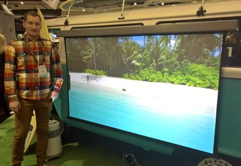

I was born on April 8th, 1992 in Salt Lake City, Utah. I have lived in Utah my whole life, so far. I’m the youngest of four kids, two girls and two boys. I grew up in the Sandy Draper area and graduated from Alta High School. I love music, movies, computers, dogs, and sometimes I even love hanging out with family. My time now consists of Work, CrossFit, Church, and Family. I currently work at a Home Automation Company designing and estimating systems for both businesses and residences.